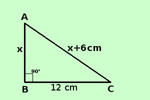

|
apprendimento Risolvere il seguente problema In un triangolo rettangolo un cateto l'ipotenusa supera un cateto di 6 cm; sapendo che l'altro cateto vale 12 cm. determinare il perimetro del triangolo ipotesi: il triangolo e' rettangolo; l'ipotenusa supera un cateto di 6 cm l'altro cateto vale 12 cm tesi: trovarne il perimetro cioe' primo cateto + secondo cateto + ipotenusa  Perimetro = primo cateto + secondo cateto + ipotenusa lunghezza del primo cateto = x lunghezza del secondo cateto = 12 cm lunghezza dell'ipotenusa = x + 6 cm Per trovare il perimetro devo trovare le misure del cateto e dell'ipotenusa; non ho una relazione risolvente ma so che il triangolo e' rettangolo quindi applico il Teorema di Pitagora al triangolo (posso farlo perche' e' un triangolo rettangolo) posso esprimerlo come il quadrato del primo cateto piu' il quadrato del secondo cateto e' uguale al quadrato dell'ipotenusa x2 + 122 = (x + 6)2 Adesso si tratta di un'equazione che, sviluppata, diventa di primo grado, e che devi gia' saper risolvere, quindi nella prossima pagina ti aggiungo tutti i passaggi motivati fino alla soluzione; se hai difficolta' a risolverla torna agli esercizi sulle equazioni numeriche intere di primo grado Prima di accedere alla prossima pagina finisci di risolvere l'esercizio |